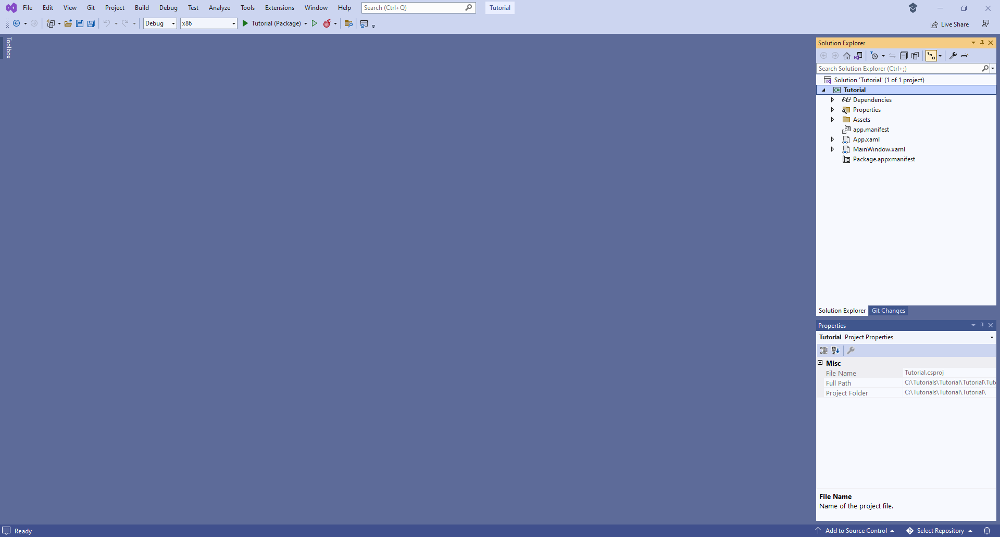
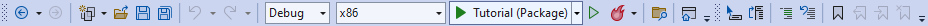
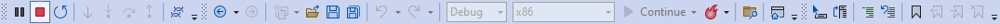
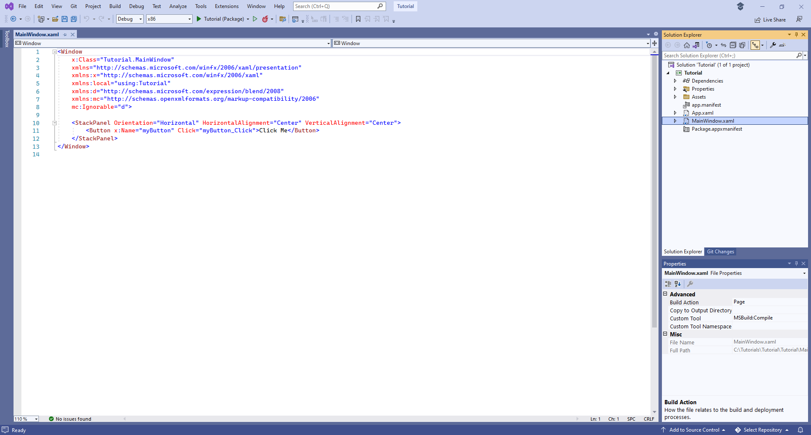
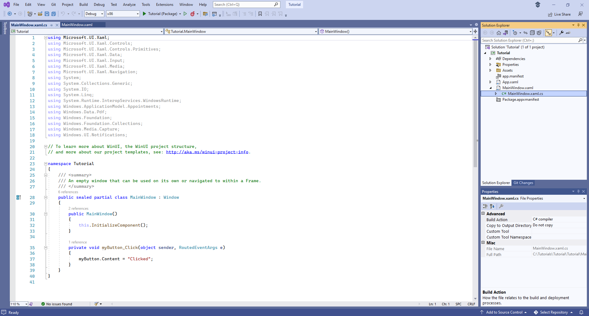
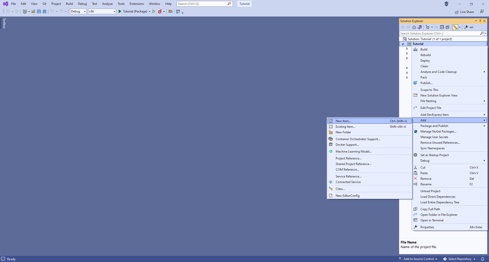

Setup and Start
Learn how to get Setup and Start with Windows App SDK with this Tutorial
Windows App SDK provides a modern development platform for developing applications for Windows 11, but you can also develop applications for Windows 10 version 1809 and later.
Setup
You will need to enable Developer Mode in Windows if this has not been enabled then you can do so with the following for Windows 11
Install
Windows App SDK applications can be created using Visual Studio 2022 to Install it, if this has not been done already or to check you have what you need, you can do so with the following:
Start
To create an application using the Windows App SDK you will need to open Visual Studio 2022 and Create a new project, by doing the following:


Finally, the Solution for your application will be opened in Visual Studio 2022

Guide
Visual Studio has a Menu at the top of the Window, when you need to do something from the Menu this is where you need to do it and there is also a Search box to find commands if needed.
In Visual Studio, below the Menu is the Toolbar options include Debug shown with the name of the application which will start your application along with other options including Save, although please note your Toolbar may look different.

When your application is running, the Toolbar will change to include other options including Stop to finish Debugging and Close your application although again your Toolbar may look different.

When a Solution has been opened or created in Visual Studio to then Edit or Add any XAML for the Main Window for your application in Visual Studio from Solution Explorer double-click on MainWindow.xaml for the XAML of Main Window.

Then to Edit or Add any Code for the Main Window for your application, from Solution Explorer select the arrow next to MainWindow.xaml to reveal MainWindow.xaml.cs then double-click on it to for the Code for the Main Window.

If you need to Add anything else to your application, in Visual Studio from Solution Explorer right-click on the Project which is displayed under the Solution and then select the Add then New Item... option.

In Add New Item you could select Code File in Code for a Class such as Library.cs or a Blank Page in WinUI, and then select the Add to include this new item in your application.
Once done you should be ready to start developing the Windows App SDK with this from tutorialr.com!